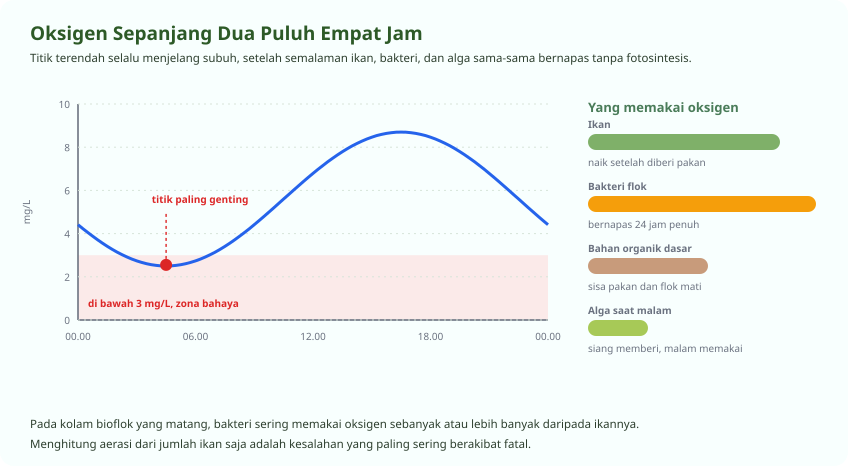

Yang Menghabiskan Oksigen Bukan Cuma Ikan
Pada kolam bioflok, bakteri sering memakai lebih banyak daripada ikannya
Ini kesalahpahaman yang paling sering berakibat fatal. Pembudidaya menghitung kebutuhan oksigen dari jumlah ikan saja, lalu memasang blower seadanya. Padahal di kolam bioflok yang matang, koloni bakteri bisa memakai oksigen sebanyak atau bahkan lebih banyak daripada ikan yang dipelihara.
Ditambah lagi bahan organik yang terurai di dasar. Ketiganya bernapas sepanjang malam tanpa satu pun yang menghasilkan oksigen.

Ikan
Makin besar dan makin banyak, makin besar pemakaiannya. Naik tajam setelah diberi pakan dan saat suhu air tinggi.
Bakteri flok
Bernapas dua puluh empat jam. Makin pekat flok, makin besar pemakaiannya. Inilah yang sering terlupakan.
Bahan organik dasar
Sisa pakan dan flok mati yang terurai. Menumpuk diam-diam sampai suatu malam menghabiskan oksigen.
Suhu air
Air panas menyimpan lebih sedikit oksigen. Pada 32 derajat, daya tampung oksigen air jauh di bawah 26 derajat.
Membaca Tanda Sebelum Terlambat
Ikan memberi tahu Anda, biasanya sekitar satu jam sebelumnya
| Kadar oksigen | Yang terlihat pada ikan | Tingkat bahaya |
|---|---|---|
| Di atas 5 mg/L | Menyebar merata, makan lahap | Aman |
| 4 sampai 5 mg/L | Masih normal, nafsu makan sedikit turun | Waspada |
| 3 sampai 4 mg/L | Berkumpul di dekat aerator, pakan tersisa | Bahaya, segera bertindak |
| 2 sampai 3 mg/L | Menggantung di permukaan, mulut megap-megap | Kritis |
| Di bawah 2 mg/L | Berenang lemah, mulai ada yang mati | Kematian massal sedang berlangsung |
Menghitung dan Menata Aerasi
Jumlah titik lebih menentukan daripada besarnya blower
-
Pilih blower berdasarkan volume air, bukan luas kolam
Patokan yang lazim untuk bioflok padat tebar tinggi adalah sekitar 2 sampai 3 liter udara per menit untuk setiap meter kubik air. Kolam D3 dengan tinggi air satu meter berisi sekitar 7 meter kubik, jadi perlu sekitar 15 sampai 21 liter per menit.
-
Perbanyak titik aerasi, jangan andalkan satu titik besar
Empat batu aerasi kecil yang tersebar jauh lebih baik daripada satu batu besar di tengah. Yang dicari bukan gelembung besar, melainkan gelembung halus yang merata dan arus yang memutar seluruh air.
-
Letakkan batu aerasi dekat dasar, tetapi jangan menempel
Sekitar lima sampai sepuluh sentimeter dari dasar. Menempel di dasar membuat lumpur teraduk terus-menerus, terlalu tinggi membuat lapisan bawah tidak ikut berputar.
-
Arahkan arus agar berputar, bukan saling melawan
Pada kolam bundar, susun titik aerasi agar air berputar satu arah. Putaran itulah yang membawa endapan ke tengah menuju pipa pembuangan sentral.
-
Periksa sudut mati setiap minggu
Ukur oksigen di titik yang arusnya paling lemah, biasanya di pinggir berlawanan dengan blower. Angka di titik itulah yang menentukan nasib kolam, bukan angka di tengah.
Pertanyaan Seputar Modul Ini
Yang paling sering ditanyakan peserta
Berapa ukuran blower yang dibutuhkan kolam bioflok?
Patokan yang lazim untuk bioflok padat tebar tinggi adalah sekitar 2 sampai 3 liter udara per menit untuk setiap meter kubik air. Kolam berdiameter tiga meter dengan tinggi air satu meter berisi sekitar 7 meter kubik, jadi memerlukan sekitar 15 sampai 21 liter udara per menit.
Hitung dari volume air, bukan dari luas permukaan kolam. Dan ingat bahwa pada bioflok, bakteri juga memakai oksigen sebanyak atau lebih banyak daripada ikannya, jadi jangan menghitung dari jumlah ikan saja.
Kenapa ikan menggantung di permukaan pada pagi hari?
Karena oksigen terlarut mencapai titik terendah menjelang subuh. Semalaman ikan, bakteri, dan alga sama-sama bernapas tanpa ada fotosintesis yang menambah oksigen.
Kalau ikan sudah megap di permukaan, kadar oksigen kemungkinan sudah di bawah 3 mg/L dan Anda terlambat sekitar satu jam. Hidupkan semua aerator, hentikan pakan, dan semprotkan air dari ketinggian untuk memecah permukaan. Setelah aman, tambah titik aerasi supaya tidak terulang.
Bisakah kolam bioflok berjalan tanpa aerator?
Tidak, kalau yang dimaksud bioflok yang sebenarnya. Flok adalah koloni bakteri hidup yang bernapas, dan bakteri itulah pemakai oksigen terbesar di kolam. Begitu aerasi berhenti, oksigen habis dalam hitungan jam, flok mati dan mengendap, lalu amonia melonjak.
Yang sering disebut lele tanpa aerator sebenarnya kolam padat tebar biasa yang mengandalkan kemampuan lele mengambil udara dari permukaan. Itu bisa berjalan, tetapi padat tebarnya harus jauh lebih rendah dan airnya perlu diganti rutin.
Berapa lama kolam bertahan kalau listrik padam?
Pada bioflok padat tebar tinggi, dua jam di malam hari sudah cukup untuk kehilangan seluruh isi kolam. Di siang hari sedikit lebih longgar karena alga masih menghasilkan oksigen, tetapi tetap berbahaya.
Karena itu blower cadangan bertenaga aki atau genset adalah syarat, bukan pilihan. Uji nyalakan sebulan sekali. Genset yang tidak pernah dihidupkan biasanya mogok tepat saat dibutuhkan.
Seluruh modul boleh dibaca berurutan atau melompat sesuai kebutuhan. Lihat daftar pelatihan budidaya ikan, atau semua jalur pelatihan.